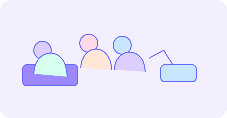
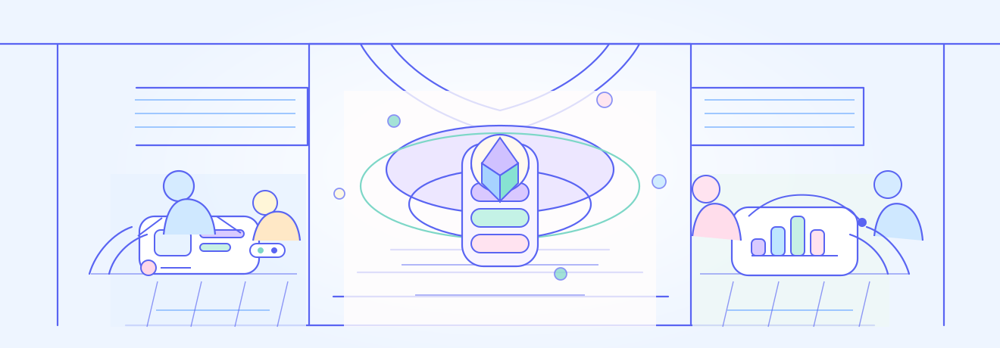

项目在 oneworld 完成从首轮到 ICO 的阶段融资，让生产力先被社区看见。

Launch to Trading
让生产力、资本与流动性接通
oneworld 把 AI 项目的早期价值组织成融资能力，Plato 再把验证后的价值带入市场。
价值桥梁
从 Launch 到 Plato，是一条完整路径
Launchpad 负责组织早期融资，Plato 负责承接现货交易与价格发现。
融资负责建立信任，交易负责建立流动性，把二者分层让每个环节更有力量。
当融资完成，项目进入 Plato Spot Orderbook DEX，交给现货市场完成价格发现。

Launch to Trading
让生产力、资本与流动性接通
oneworld 把 AI 项目的早期价值组织成融资能力，Plato 再把验证后的价值带入市场。
Launchpad 负责融资
项目在 oneworld 完成从首轮到 ICO 的阶段融资，让生产力先被社区看见。
Plato 负责交易
当融资完成，项目进入 Plato Spot Orderbook DEX，交给现货市场完成价格发现。
融资与交易边界清晰
融资负责建立信任，交易负责建立流动性，把二者分层让每个环节更有力量。
形成价值闭环
从创造到融资再到市场流动性，路径始终保持连续。
项目路径
五步走完价值承接
启动首轮
让第一轮融资先进入市场。
获得支持
社区围绕当前阶段提供真实资金与信号。
提交证明
用阶段成果赢得下一轮融资能力。
完成 ICO
最终轮结束，项目准备进入市场定价。
进入 Plato
通过现货 Orderbook DEX 承接流动性。
Launch to Trading
让价值从诞生起流动
oneworld 不是终点，而是 AI 项目走向市场之前的融资起点。